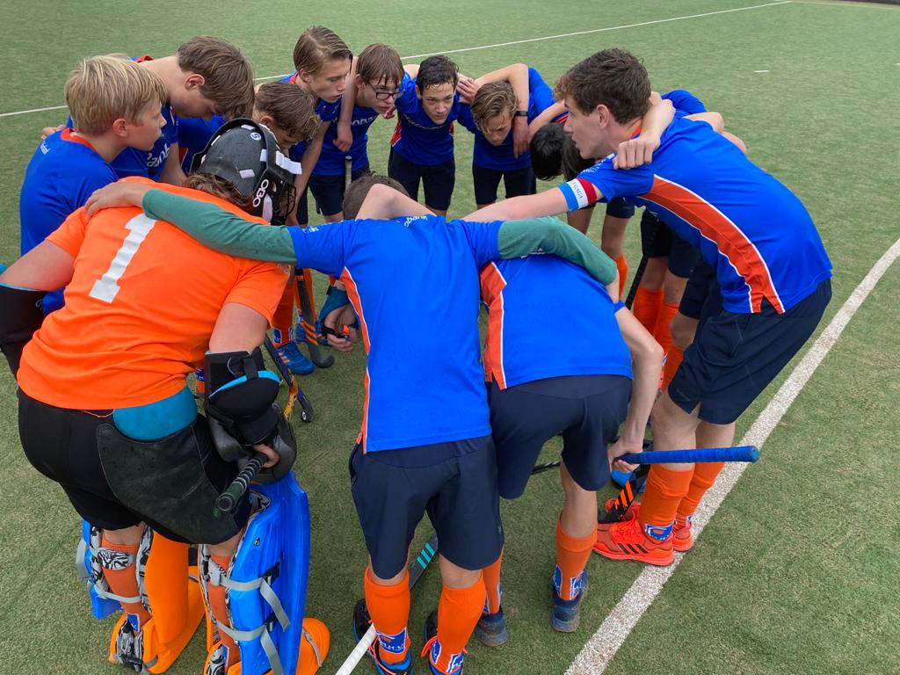
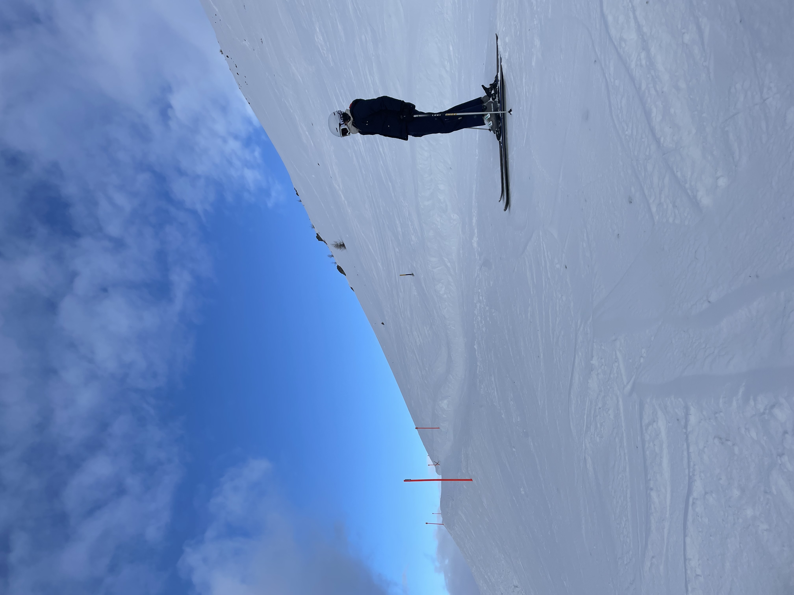
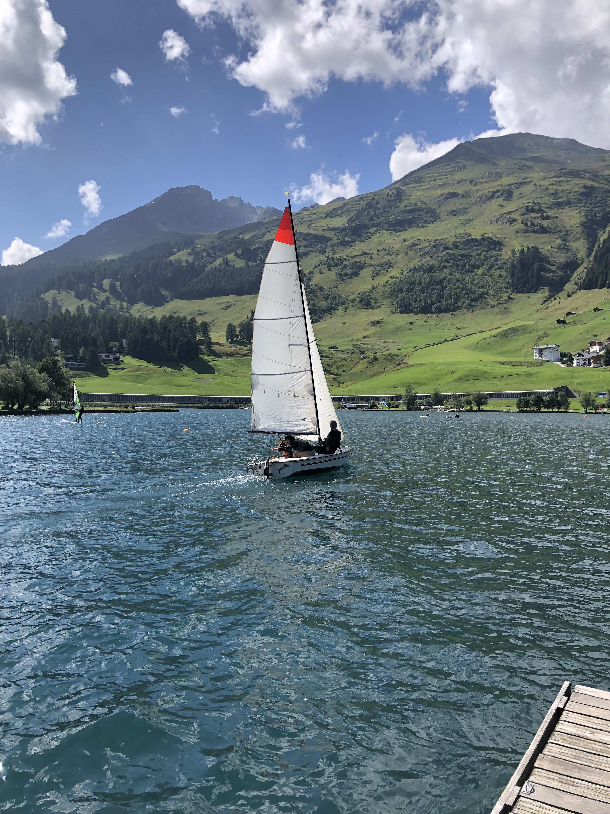

Wat kan ik?
Hockey
Ik zit sinds mijn 6e al op hockey en heb daar enorm veel lol in. Ik speel op het moment bij MHV in de JB2. Wij zijn gedeelde 3e plaats geworden vorig jaar. Wij hebben het als een team enorm gezellig en kunnen ook prima hockeyen. Mijn positie in het veld is laatste man of linksachter. Ik speel eigenlijk altijd in de verdediging, omdat je dan een duidelijk overzicht hebt van het spel en een goeie inschatting kan maken van wat de tegenstander gaat doen.
Skiën
Een van mijn favorieten hobby's is skiën. Het is alleen in Nederland een lastige sport om te beoefenen. Daarom ga ik ook naar het buitenland om te skiën, dat kan helaas niet zo vaak. Dus als ik ga geniet ik er erg van om met 40 km/h van de berg af te skiën. Ik ben zelf wel echt een mooi-weer-skiër. Ik vind het maar niks om met -20 graden in een open liftje te zitten. Meestal ga ik in de kerstvakantie skiën. Het beste land om te skiën is naar mijn mening toch echt wel Zwitserland. Het lekkere eten, de prachtige taal en de fijne mensen. Voor mij echt een top plek om te skiën.
Zeilen
Zeilen is een prachtige sport. Er zitten twee kanten aan: Je hebt de sportieve kant waar je met windkracht 8 heel hard gaat varen en je hebt de relaxte kant waar je met het zonnetje in de rug een beetje op een boot zit met wat vrienden. Ikzelf vind eigenlijk het tweede de beste kant van de sport. Alhoewel als het weer het toestaat ik het eerste eigenlijk ook wel heel leuk vind, met windkracht 4 over de rand leunen om het bootje recht te houden. Zeilen is in de zomer in Nederland een heerlijke sport.